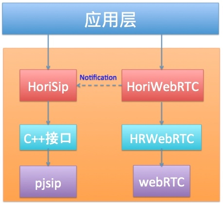
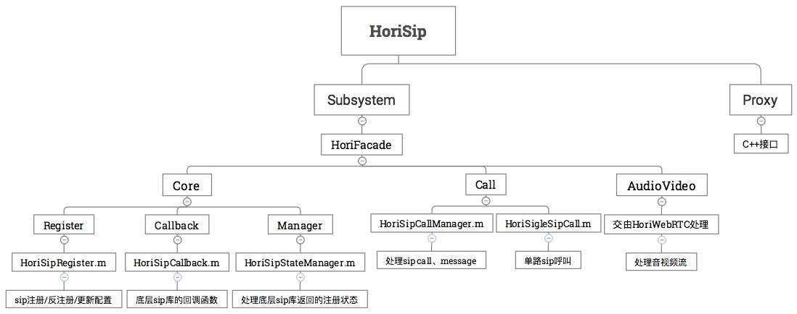

iOS项目开发中组件化的应用
以下项目的组件化应用是在合立任职时实现的，采用的是CocoaPods方式，组件关系图：

整个项目有4个组件：Hori-pjsip、HRWebRTC、HoriSip、HoriWebRTC；
- Hori-pjsip组件：修改编译好的pjsip静态库由CocoaPods管理；
- HRWebRTC组件：修改编译好的webRTC动态库由CocoaPods管理：
- HoriSip组件：HoriSip组件中封装了一层基于pjsip的C++接口，然后基于这套C++接口再封装OC接口；
- HoriWebRTC组件：基于HRWebRTC组件和HoriSip发出的音视频通知封装的一套音视频接口。
准备工作
项目都是使用git管理
- 考虑到公司网络问题，建立内部的CocoaPods公有库镜像：Specs；
- 创建CocoaPods私有库：HoriSpecs；
- 分别创建4个组件的git仓库。
开发阶段
主要是负责Hori-pjsip、HoriSip封装，HoriWebRTC组件主要负责podspec的编写
Hori-pjsip组件
pjsip官方提供了一个pod lib，目前是2.6版本pjsip官方pod lib。因为封装C++接口是另外一个同事在做，而且修改了pjsip的源码，所以pjsip相关的静态库必须自己编译。不过还好，官方提供了一套完整的podsepc文件，直接拿来用。
HoriSip组件
同事提供一个一份基于pjsip的C++接口，而后通过这套接口封装OC的API，这就是HoriSip组件做的事情：

这是HoriSip的框架，主要是采用外观设计模式，分成3个子系统，然后由HoriFacade类统一对子系统进行调用，Proxy存放着C++接口文件。
框架有了，然后就是填代码了，这里不过多描述。现在主要说下podspec文件的编写，说下很少碰到的参数：
header_search_paths =['"$(PODS_ROOT)/Headers/Public/Hori-pjsip/pjlib/include"',
'"$(PODS_ROOT)/Headers/Public/Hori-pjsip/pjlib-util/include"',
'"$(PODS_ROOT)/Headers/Public/Hori-pjsip/pjmedia/include"',
'"$(PODS_ROOT)/Headers/Public/Hori-pjsip/pjnath/include"',
'"$(PODS_ROOT)/Headers/Public/Hori-pjsip/pjsip/include"']
s.xcconfig = {
'HEADER_SEARCH_PATHS' => header_search_paths.join(' '),
'GCC_PREPROCESSOR_DEFINITIONS' => 'PJ_AUTOCONF=1'
s.xcconfig实际是对Build Settings进行配置：
- HEADER_SEARCH_PATHS配置Target的搜索头文件的路径，这里配置了pjsip中所有静态库的头文件路径；
- GCC_PREPROCESSOR_DEFINITIONS是GCC预编译头参数，这里配置了PJ_AUTOCONF=1，是pjsip官方推荐配置。
HoriWebRTC
这个组件我只是把框架搭好，主要由同事负责，说说pod lib lint遇到的问题吧。
因为这个组件是基于HRWebRTC->webRTC，我第一次pod lib lint的时候，报错：
Undefined symbols for architecture i386:
"_OBJC_CLASS_$_WebrtcEngine", referenced from:
objc-class-ref in libHoriWebRTC.a(HoriMediaCallEngineCtrl.o)
"_OBJC_CLASS_$_HRMediaParameter", referenced from:
objc-class-ref in libHoriWebRTC.a(HoriMediaCallEngineCtrl.o)
"_OBJC_CLASS_$_RTCEAGLVideoView", referenced from:
objc-class-ref in libHoriWebRTC.a(HoriRemoteVideoView.o)
"_OBJC_CLASS_$_RTCCameraPreviewView", referenced from:
objc-class-ref in libHoriWebRTC.a(HoriLocalVideoView.o)
ld: symbol(s) not found for architecture i386
追到本质，就是webRTC.framework不支持i386架构，为验证使用的webRTC.framework有没有支持i386：
lipo -info WebRTC.framework/WebRTC
// 终端显示
Architectures in the fat file: WebRTC.framework/WebRTC are: x86_64 armv7 arm64
确实没有i386的支持，那怎么办，让同事添加i386的支持吗？其实还有一种方式，修改xcconfig文件（上面已经提到过），我们知道可以在Build Settings -> Valid Architectures中修改支持的架构，所以同理在podsepc中添加：
# 只支持arm64和x86_64架构
valid_archs = ['arm64','x86_64',]
s.xcconfig = {
'VALID_ARCHS' => valid_archs.join(' '),
}